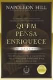

Você sente que a educação tradicional não tem nada a ver com a vida e que a escola não está preparando você para o mundo real? Se você respondeu "sim" a essas perguntas, então este livro foi feito para você! Quando criança, Robert Kiyosaki não foi um dos melhores alunos. Apesar de inteligente, ele aprendia de forma diferente daquela esperada pelos professores. Então, Robert encontrou um mentor que lhe ensinou muitas lições sobre dinheiro e investimentos — e teve tanto êxito que pôde se aposentar antes de chegar aos cinquenta anos. Pai Rico, Pai Pobre para Jovens, mais um sucesso da série de best-sellers sobre dinheiro e investimentos, não se limita a contar a impressionante história de vida do autor; ele mostra como tomar decisões hoje — e começar a pensar como os ricos.
Você pode ler essse livro incrivel clicando aqui

O 9o livro mais vendido de todos os tempos, que influencia líderes e empreededores em todo o mundo, agora em uma edição especial atualizada para o século XXI. O clássico best-seller sobre o sucesso agora anotado e acrescido de exemplos modernos, comprovando que a filosofia da realização pessoal de Napoleon Hill permanece atual e ainda orienta aqueles que são bem-sucedidos. Um livro que vai mudar não só o que você pensa, vai mudar o modo como você pensa
Você pode ler essse livro incrivel clicando aqui